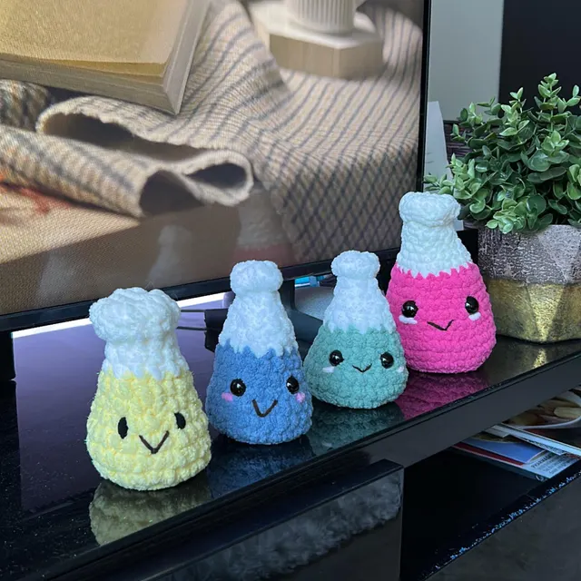

Based in Hamilton, Ontario, TheKnottyScientist is a local artisan offering handmade crochet creations inspired by science and animals. From bacteria and viruses to body organs and adorable animals, each item is made with care, creativity, and scientific passion.
These crochet items are perfect for gifts, educational tools, or quirky decor. Discover more on our Etsy store or visit our Instagram @TheKnottyScientist.
You’ll You'll be redirected in 15 seconds...
Or visit directly: TheKnottyScientist on Etsy.
